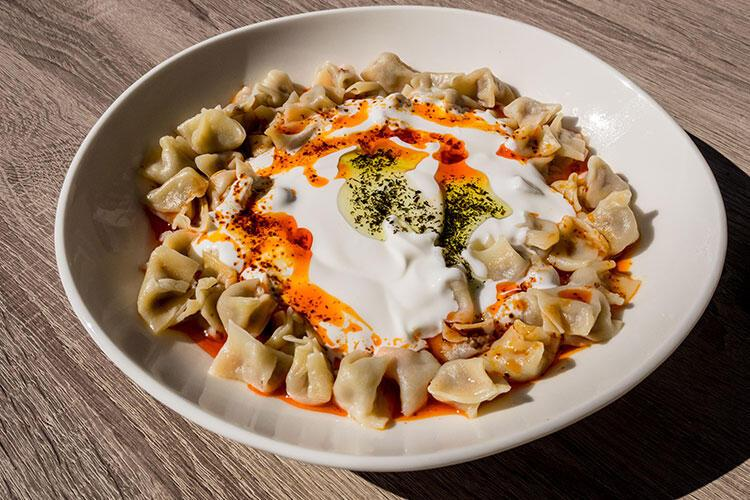

Home
Manti

Description
Manti is a traditional Turkish dish which includes small dumplings filled
with ground lamb or beef. It is commonly eaten for lunch or dinner and is
served with yogurt and garlic sauce.
Ingredients
- 1 lb ground lamb or beef
- 1 cup flour
- 1/4 cup water
- 1/4 cup salt
- 1/4 cup pepper
- 1/4 cup yogurt
- 1/4 cup garlic
- 1/4 cup parsley
Steps
- Mix the ground lamb or beef with salt and pepper.
- Roll out the dough and cut it into small squares.
-
Fill the squares with the meat mixture and fold them into small
dumplings.
- Boil the dumplings until cooked.
- Mix the yogurt and garlic together.
-
Serve the dumplings with the yogurt and garlic sauce and sprinkle
parsley on top.